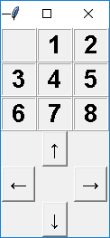
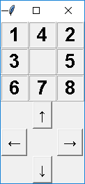

作業內容
配分：[0.00]
1.
Sliding Puzzle
Sliding Puzzle
在一個 N*N 的平面上，放置有 N*N - 1 個板塊。 每個板塊不能離開平面，只能在範圍內上下左右移動。 由於剩下的空位只有一個，所以若我們以按鈕表示要「向左」，能向左移動的板塊恰只有一個。

以上圖為例，若使用者按「左」，只有1可以向左。若使用者按「上」，只有3可以向上。
程式應檢查哪些移動是不合法的。例如在上圖的狀態時，「下」和「右」都是不合法的移動。
試撰寫一程式，讓使用者操控一個 3x3 的 sliding puzzle。
